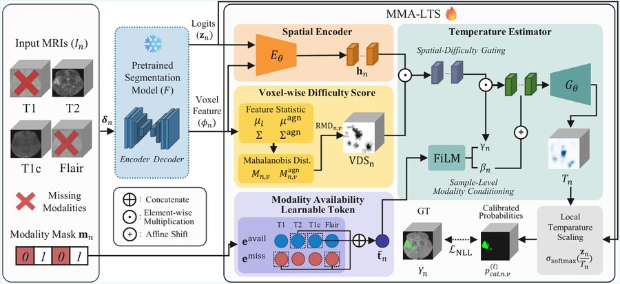

Hyunji Kim
About me
I am a Master's student at the Knowledge Innovation Research Center (KIRC), KAIST, advised by Professor Mun Young Yi. I received my B.S. in Data Science and Biomedical Engineering from Hanyang University in Aug. 2025. My research focuses on trustworthy multimodal AI, particularly vision–language models and multi-agent systems for medical reasoning.
Research Interests
Education
-
Korea Advanced Institute of Science & Technology (KAIST)
M.S., Graduate School of Data Science
Advisor: Prof. Mun Young Yi, Knowledge Innovation Research Center (KIRC)
-
Hanyang University
B.S., Department of Data Science
Biomedical Engineering (Double major)
-
Arizona State University
Exchange Program
Biomedical Engineering, Neuroscience
Publications
-

Missing Modality-Aware Calibration for Trustworthy Brain Tumor Segmentation
International Conference on Medical Image Computing and Computer-Assisted Intervention (MICCAI), 2026 PDF
Early Accept (Top 9% among 4,601 submissions)
Experience
-
Internship
Undergraduate Research Assistant
Intelligent Mobile Computing Lab (IMC Lab), Hanyang University
Research areas: digital healthcare, human–computer interaction
-
Internship
Undergraduate Research Assistant
Hanyang Digital Health Care Center (HY-DHC), Hanyang University
Research areas: digital mental health, user engagement
-
Internship
Undergraduate Research Assistant
Neural Control of Movement Lab (NCM Lab), Arizona State University
Research areas: motor control, hand dexterity, EMG
-
International Research Program
Student Researcher
The Data Science South Korea/U.S. Global Lab (DSKUS)
Research areas: data science for climate & energy policy
Funded by the U.S. Embassy Seoul through the U.S. Department of State.